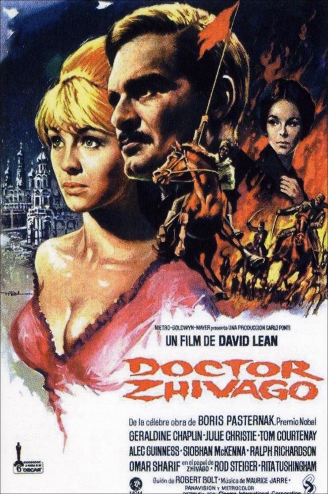

Top $10 Theater
 齊瓦哥醫生（Doctor Zhivago）—1965 《齊瓦哥醫生》（英語：Doctor Zhivago）是1965年由大衛·連執導的愛情史詩式電影，改編自俄國作家鮑里斯·巴斯特納克的同名小說。 這齣由大衛·連執導的著名電影得以面世，是基於多個原因。鮑里斯·巴斯特納克的原著小說舉世知名，電影監製卡洛龐蒂 （Carlo Ponti）更是希望她的妻子蘇菲亞·羅蘭，可以藉演出此電影展示她的才華。導演大衛·連在執導《阿拉伯的勞倫斯》 （1962年）一片後並獲得空前成功，卻因《阿拉伯的勞倫斯》以動作及冒險為主，所以決意拍攝一齣浪漫愛情電影。 當時原著小說在蘇聯被禁，所以電影大部時間在西班牙拍攝，並長達十個月。整個莫斯科的布景在馬德里外搭建； 而齊瓦哥跟Lara Antipova在第一次世界大戰期間建立的臨時醫院，以及Alexander Gromeko的祖家－"Varykino"，則在索里亞拍攝。 由於在西班牙無法拍攝漫天風雪的情景，電影中部份冬季的情節（主要是外景），以及齊瓦哥從遊擊隊中逃脫一幕，都是在芬蘭拍攝。 至於齊瓦哥一家乘坐火車到烏拉山脈的情節，則是在加拿大拍攝。 在"Varykino"的「冰宮」同樣在索里亞拍攝，只是把冰凍的蜂蠟填滿屋內。遊擊隊衝鋒橫渡結冰的湖面的一幕，是把鐵板放在乾涸的河床上， 再加上大理石的粉末作為假雪。電影中大部份冬季的景像都是在溫暖的氣候中拍攝，部份時間溫度更是高達攝氏三十二度。 通貨膨脹計算器（1965-2015，單位：美元）：